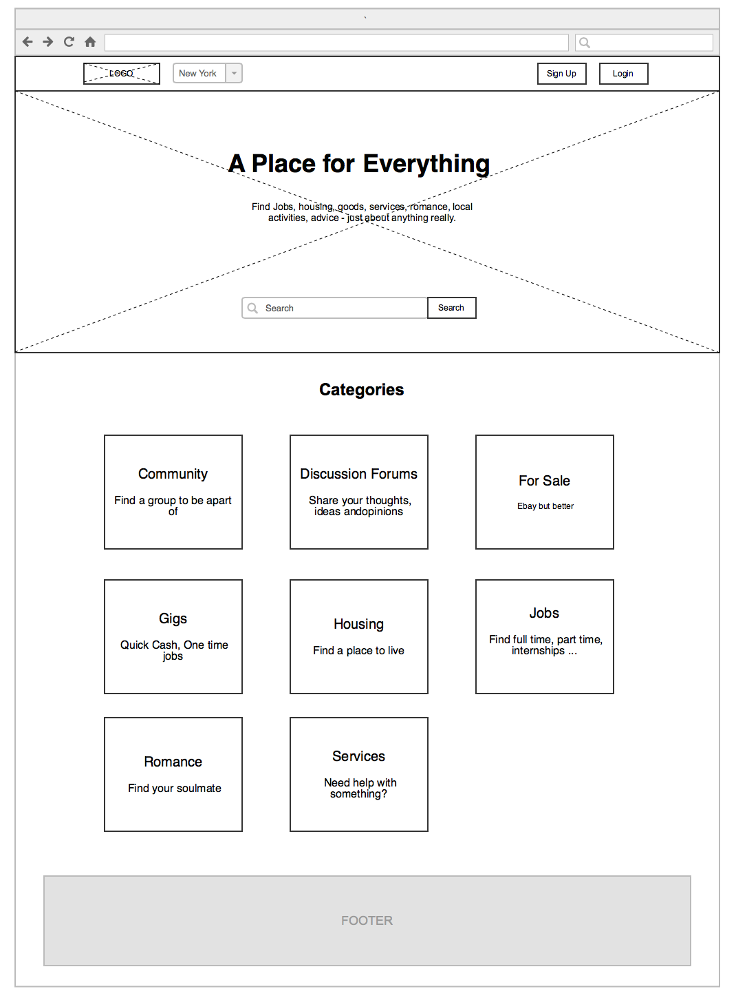
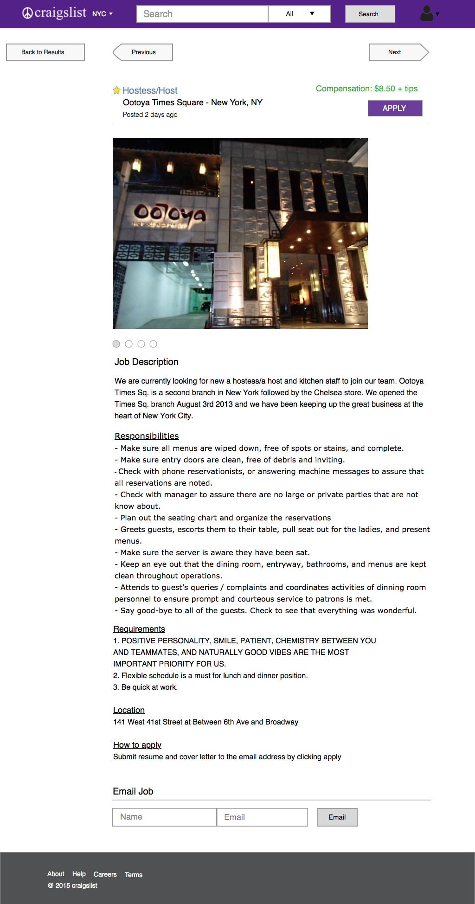

Midterm
Wireframes and Design
Executive Summary
Craigslist known for being able to find anything you need. Since the creation of the website, the design of the website has not changed. Although iconic its design and UX, it is cluttered and difficult to navigate. My wireframes and designs focused on simplicity and navigation. I wanted the user to easily navigate the website and identify the information quickly on the website. I kept the design clean and simple by using few colors and block style design.
Designed with Sketch
Home Page WireFrame
The Home Page removes all the extra features such as calendar that craigslist had. It focuses on search and categories. Under each category is a short description to help the user understand what each category contains
Results Page WireFrame
The results page for jobs show the important information for job and adds white spaces between text to make it more readable. The left side bar allows users to filter job category, job type and city. The results page allow show the number of jobs found in a particular city. Under the header is a search bar so a user can quickly search for a new result. Once a user is logged in a person icon will appear to the top right.

Job Page WireFrame
The job item page puts all the information to the center of the page. The information has a hierarchy, the job name, job location, job city, data posted, compensation and apply button is at the top. This allows a user to know immediately all the basic information for the job post. At the bottom of the page the user can email the post to a friend. The user can also navigate back to the search page or click next to go to the next job post without going back to the search page. Again focusing on navigation. The search bar is in the header this time.

Home Page Design
The color purple is kept the same as the original website. There is a image on the home page to give the user a comfortable feeling. The slogan and short description on the middle of the image immediately tell new users what the website is about.

Results Page Design
The job title are colored blue to contrast the other information for readability to the user. The refine results side bar has a slight contrast to the white background to catch the eye of the user.

Dropdown Page Design
The design shows the dropdown menu for changing city locations. The user can search and select multiple cities.

Job Page Design
The compensation is color coded green since it an information to the user when deciding whether to apply to a job. The user can also save the job post. There are different font size/style/color of the info in the header of the job post to differentiate between information.
Phone Page Design
This design shows how the home page looks on the phone. A user can swipe right to see the categories and profile. The search is also on there so a user can immediately search for something else. The home view of the phone focuses on the search with category and city filter options.